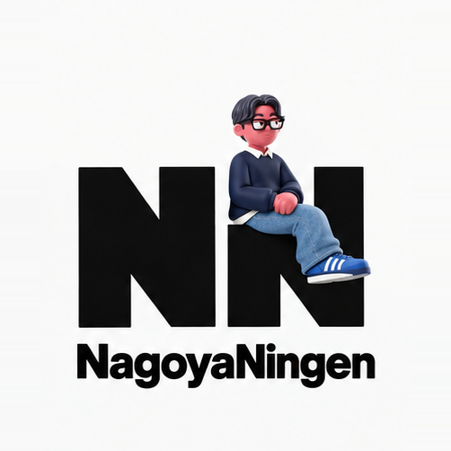
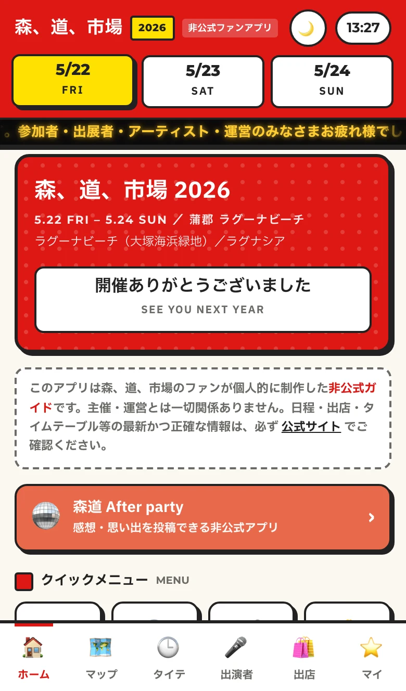
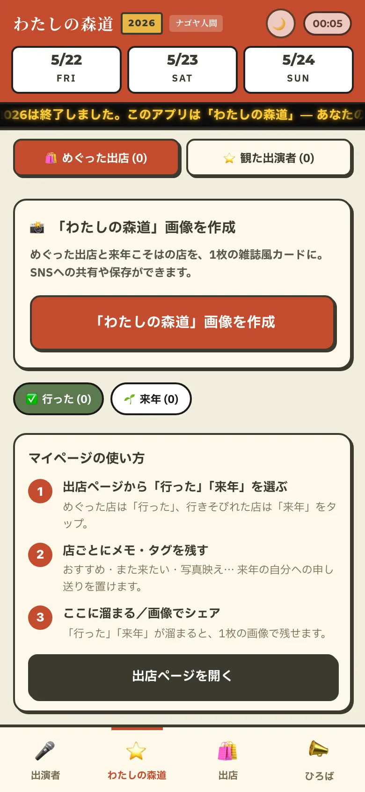
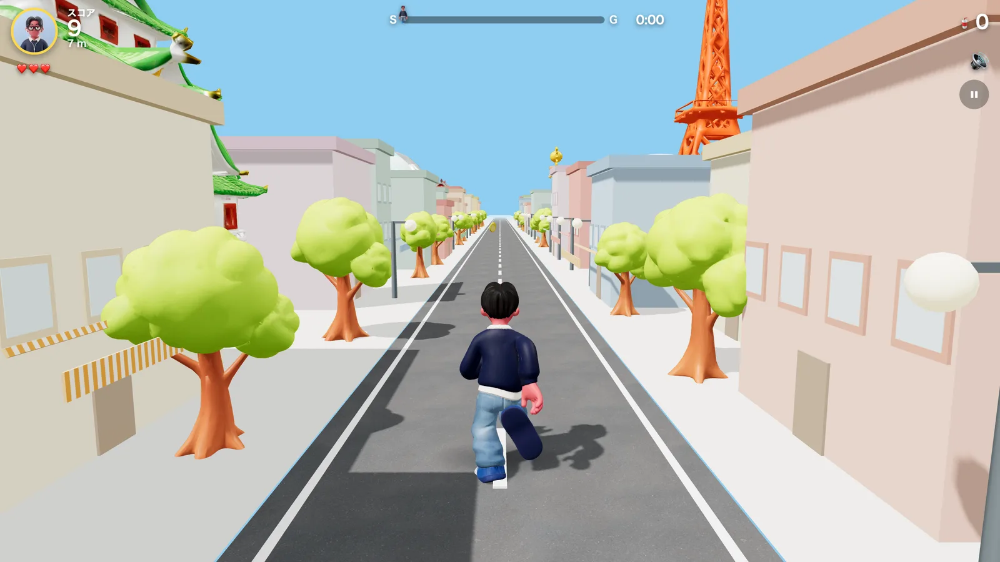

都市と再開発写真：2022年6月
都市と再開発写真：2022年6月名古屋駅再開発の全体像を、一次資料から読み解く。
名鉄・リニア・駅前広場。進捗と未定事項を分けて、名駅の見取り図に。
特集を読むNEW / NAGOYA CITY INDEX
名駅・栄から、金山・港・東山まで。
24の計画を、一次資料と確認日付きで。
再開発・駅・公園の変化を、探して比べる。
新しいビルが建つ。
街に人が集まる。
その変化は、私たちの暮らしに
どうつながっているのだろう。
ナゴヤ人間は、名古屋・愛知の都市再開発、産業、カルチャーを読み解く独立ローカルメディアです。公式発表や決算資料を手がかりに、ニュースの背景と、暮らしとのつながりを考えます。
この街を、もっと深く知るために。
事実から始め、調べた過程と見立てを開きます。
数字の時点、資料の出どころ。
何が分かっているのかを、一つずつ。
出来事を、点で終わらせない。
制度、歴史、暮らしとのつながりを。
事実と解釈を分け、根拠を示す。
分からないことも、そのままに。

ナゴヤ人間ラボ
資料を読み解く。その先で、手を動かす。
記事の制作秘話、AIの活用、地域のアプリ。
試行錯誤も、判断の過程も開く実験室です。

会場マップとお店をつなぐ、非公式ガイド。2026年開催分の制作アーカイブ。

行った店、気になった店。自分だけの森道の記憶を、一枚の画像に。

見慣れた街が、遊び場になる。ブラウザで楽しむ、名古屋のランゲーム。